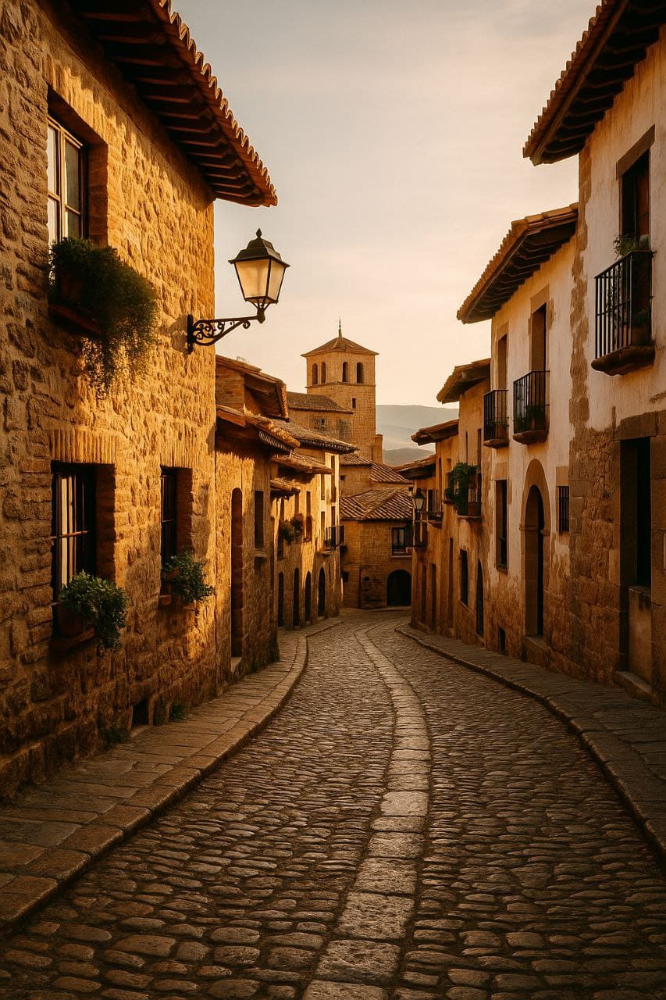

5 Outfits to Explore Spain in Style
Summary: From the sun-drenched streets of Seville to the buzzing energy of Barcelona, Spain offers the perfect backdrop for standout fashion. These 5 outfits are your ticket to turning heads while blending in with the effortless cool of Spanish locals.
Spain isn’t just a destination; it’s a runway. Whether you’re strolling through Gaudí’s colorful creations or sipping vermouth in a shadowy Madrid bar, your outfit needs to match the moment. Here are five looks to match five unforgettable Spanish vibes.
1. The Barcelona Boho
Start with a flowy printed maxi dress—bonus points for flamenco-inspired ruffles. Pair with strappy sandals and oversized sunglasses. Top it off with a woven bag and you're ready for both the beach and a Gaudí photo op.
2. The Seville Chic
White linen trousers, a tucked-in terracotta blouse, and espadrilles are your holy trinity here. Add gold accessories and a fan (yes, a fan!)—not just for flair, but for that Andalusian heat.
3. The Madrid Modernista
Madrid is sleek, cosmopolitan, and full of contrast. Think high-waisted trousers, a graphic tee, a blazer draped over your shoulders, and ankle boots. Finish it with bold red lipstick and confidence.
4. The Granada Romantic
A midi skirt with floral prints, a soft lace blouse, and ballet flats will make you feel like poetry walking through the Alhambra. Don’t forget a small silk scarf—either for your hair or bag.
5. The Valencia Coastal
Cropped denim shorts, a striped sleeveless top, and white sneakers scream coastal cool. Throw on a light denim jacket for the breeze and sunglasses for that Mediterranean sparkle.
Style Tip: Spain’s cities are walkable—always balance style with comfort. Swap heels for platforms or sandals, and always carry sunscreen in your chicest tote.
Final thought: No matter where you go in Spain, your outfit should reflect the joy, boldness, and charm of the country itself. So pack smart, style freely, and let Spain be your stage.